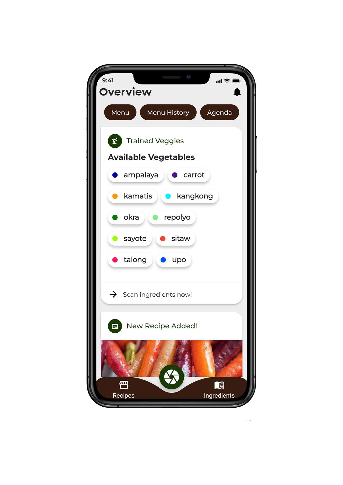

Kubo
smart menu planner
Kubo, a mobile-based food planner, to guide people with lack of cooking experience gain confidence in the field of cooking by supplying them the necessary data needed to be done in accomplishing a certain cuisine. The proposed system involves the integration of an AI for faster food preparation.


Kubo, a mobile-based food planner, to guide people with lack of cooking experience gain confidence in the field of cooking by supplying them the necessary data needed to be done in accomplishing a certain cuisine. The proposed system involves the integration of an AI for faster food preparation.

2022 © lablen.